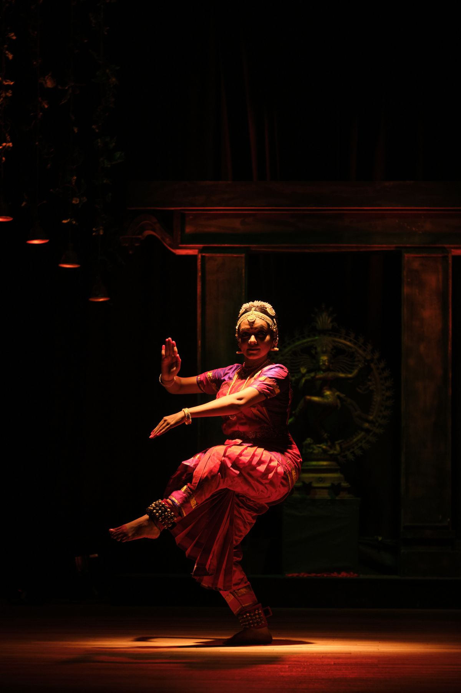
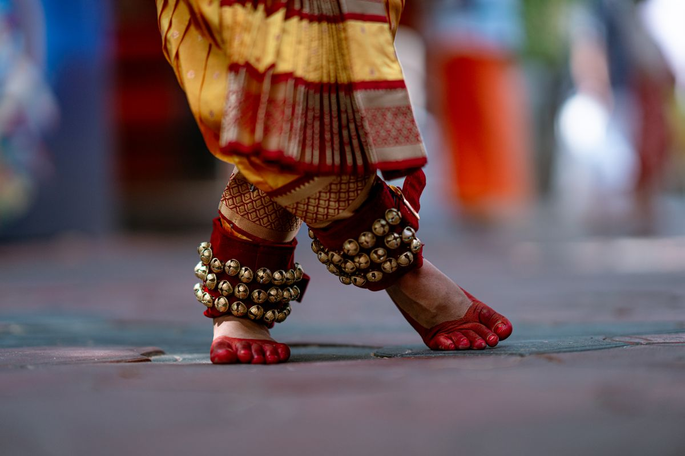

Solo Bharatanatyam · Kalakshetra bani · Touring
The margam, printed properly — and danced that way.
Ananya Nair performs the complete Bharatanatyam recital — pushpanjali to tillana — for sabhas, festivals and first-time audiences. Every programme on this page is printed the way it will be danced: item, ragam, talam, minutes. Build yours below, check the fee against the published card, then book the date.

Build the programme
A margam has a fixed running order — invocation first, tillana last — so the builder keeps the order and lets you choose the items. Tick what your evening needs; the running time, the interval and the fee are worked out from the same rate card printed in section 02. Nothing here is a quote: it is the published arithmetic, done in the open.
Why the order cannot shuffle: the margam is an arc — the body warms through pure dance, the varnam spends the evening's strength at its centre, and the padams cool the room before the tillana. A programme that starts with the tillana is not a shorter margam; it is a different, lesser evening.
Fees, printed
The same card the builder uses. Fees are for Chennai; travel and stay outside the city are charged at cost and agreed before the advance is paid.
| Programme length (dance time) | Includes | Fee |
|---|---|---|
| Up to 45 minutes | Short margam or excerpt programme, recorded music | ₹40,000 |
| 46–75 minutes | Margam without padam set, or varnam-centred programme | ₹55,000 |
| 76–105 minutes | The full margam as printed in section 01 | ₹75,000 |
| 106–135 minutes | Full margam plus a second padam set or a guest item | ₹95,000 |
| Over 135 minutes | Festival commissions and double bills | On request |
| Live orchestra (any length) | Nattuvangam, vocalist, mridangam, violin | + ₹60,000 |
| Format | What it is | Fee |
|---|---|---|
| Lecture-demonstration · 45 min | The form explained as it is danced — adavus, tala and abhinaya broken down, with questions | ₹35,000 |
| Masterclass day · up to 5 hrs | Teaching for advanced students: adavu precision, korvai construction, abhinaya clinic | ₹40,000 |
| Choreography commission | A new item set on the dancer or your group, including six rehearsals | from ₹1,20,000 |
| Extra rehearsal call | Per additional full call with orchestra, beyond the one included | ₹8,000 |
What moves the price: the live orchestra (a flat ₹60,000 — four musicians, never negotiated per head); travel and stay outside Chennai, at cost; a stage floor that needs a hired dance surface to be safe (see the rider on the About page); and December-season dates, which are held only against the 50% advance. Nothing else is added later — if it is not on this card, it is not in the bill.
The season ahead
The December slot is the season's centre: a full margam with the live orchestra, in the prime evening hour. January takes the lecture-demonstration to Bengaluru, February a forty-minute excerpt programme to Hyderabad, and March a new choreography premiere to Kochi. Dates between these are open — the diary on the About page lists them all.
“She held a restless December audience through a thirty-two-minute varnam without a single phone lighting up in the hall. We rebooked her before the season ended.”
The instrument is the floor

Bharatanatyam is danced barefoot, in araimandi — a deep, turned-out half-squat that puts the full weight of the body through the feet for two hours. The floor is therefore not a venue detail; it is half the instrument. Splinters, nails, grit, a polished marble slipperiness or a carpet that grabs the heel will each end an evening in a different way.
Before any booking is confirmed, the rider on the About page asks for the stage dimensions and the floor surface — and where a floor cannot be made safe, a hired dance surface is quoted on the fee card rather than discovered on the day. It is the least glamorous line in this portfolio, and the one that has saved the most performances.